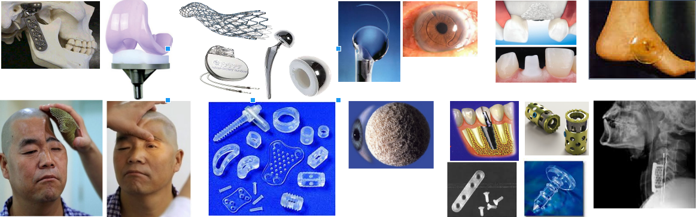
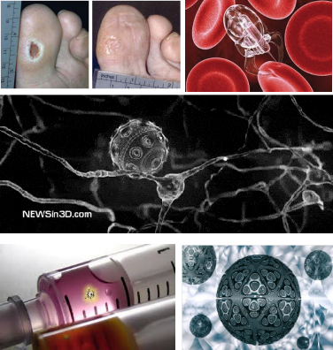
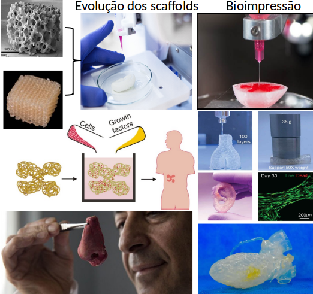

Engenharia Clínica
Profs. Drs. Harki Tanaka e Tiago Ribeiro
O que é Engenharia Clínica?
"A clinical engineer is a professional who supports and advances patient care by applying engineering and managerial skills to healthcare technology."- American College of Clinical Engineering (ACCE).
À medida que a medicina se tornou cada vez mais dependente de tecnologias sofisticadas, com complexos equipamentos a ela associados o Engenheiro Clínico tornou-se a ponte entre a medicina moderna e a engenharia.
No Brasil, a Engenharia Clínica é uma subárea de Engenharia Biomédica, sendo muitas vezes complementada com a realização um estágio em ambiente hospitalar, dando ao aluno uma base sólida em operações hospitalares, protocolos e ética.
Algumas das principais atribuições do Engenheiro Clínico são:
- Gestão da tecnologia no ambiente hospitalar;
- Certificação e testes em equipamentos médicos de acordo com agências reguladoras;
- Projeto, adequação e execução de instalações de parques hospitalares;
- Assessoria para aquisição de equipamentos;
- Treinamento e Orientação de equipes de manutenção;
- Segurança e controle de qualidade dentro de clínicas ou hospitais.
O Eng. Clínico é responsável por todo o ciclo de vida da tecnologia em saúde, desde sua incorporação (especificando suas características, no planejamento de instalação, testes de aceitação), passando por sua utilização no ambiente hospitalar (oferecendo treinamentos, manutenção, calibração, e avaliando custo/benefício de contratos com prestadores de serviços), até sua renovação (substituindo-o por uma tecnologia mais moderna).
Um dos pontos mais importantes da Eng. Clínica é a gestão das manutenções preventivas e execução das manutenções corretivas nos equipamentos.
- Manutenções preventivas são aquelas programadas pela Eng. Clínica e executadas de acordo com um cronograma, com o intuito de fazer fazer revisões no equipamento evitando sua parada inesperada.
- Manutenções corretivas são realizadas quando o equipamento apresenta algum problema ou defeito e o usuário abre um chamado para a Eng. Clínica.
Além das manutenções e gestão dos equipamentos a Eng. Clínica também desenvolve alguns equipamentos ou dispositivos para facilitar/melhorar processos dentro do hospital.
Biomateriais e dispositivos implantáveis
O grupo atua no desenvolvimento de biomateriais e dispositivos biomédicos, envolvendo o preparo, caracterização físico
química e caracterização de desempenho em condições que simulem a aplicação em questão.
- Um biomaterial é qualquer substância ou combinações de substâncias a fim manter ou melhorar a qualidade de vida do indivíduo. Pode ser de origem natural ou sintética, usado por qualquer período de tempo, acrescentando ou substituindo parcialmente ou totalmente qualquer tecido, órgão ou função do corpo.
- Nossa equipe trabalha no desenvolvimento de novos materiais com características específicas para cada tipo de aplicação. Os materiais são divididos entre materiais metálicos, cerâmicos, poliméricos e compósitos de alto desempenho.
- Tendências em pesquisa envolvendo biomateriais cada vez mais inovadores com características microestruturais, morfológicas e funcionais aprimoradas à avanços tecnológicos nessa área têm um impacto direto na qualidade e expectativa de vida dos pacientes.
Avanços tecnológicos na área:

Medicina Regenerativa
Tratamento de doenças: Associação de fármacos em biomateriais; nanorobôs.
Engenharia Tecidual
Desenvolvimento de órgãos híbridos Scaffolds: biomateriais que atuam como suportes tridimensionais usados na engenharia tecidual, para desenvolvimento de variados tipos de tecidos.
